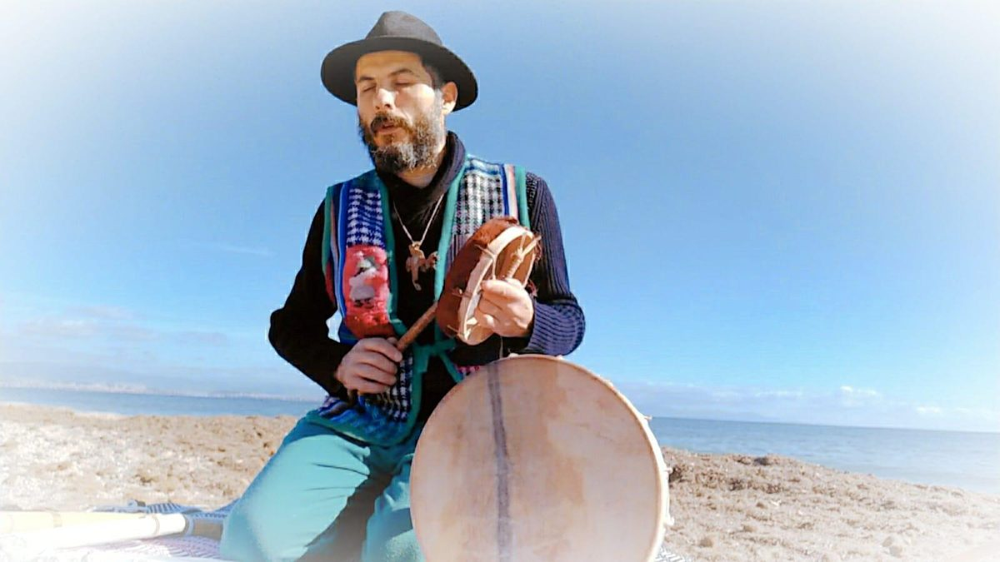

Ti aspettiamo a Baratili.
Con piacere ti invito a partecipare al Festival Felicitas che si terrà a Baratili San Pietro il 21 novembre.
FelicitasMundi è una rete di villaggi diffusi. Il primo è la Sardegna. Il villaggio diffuso è composto da tanti vicinati. Ogni vicinato rappresenta e porta nel villaggio la sua anima, la sua indipendenza, i suoi talenti, i suoi prodotti, le sue peculiarità e anche i suoi bisogni.
Il festival è la prima occasione di incontro per conoscere la piattaforma FelicitasMundi che integra coscienza, tecnologia e logistica nella comunità. È un'occasione per avviare l'integrazione di questo progetto con altri progetti e reti attivi nel villaggio Sardegna, a vantaggio di tutto il territorio.
Dato che non siamo e non vogliamo essere isolati dal resto del mondo, ci sarà anche l'intervento di uno studioso di geopolitica che illustrerà un punto di vista originale sulla situazione internazionale.
Ci farà piacere averti con noi, con le tue idee, la tua esperienza e ciò che vorrai condividere.
La vera storia d'Italia
Lamberto Rimondini sarà con noi durante il pomeriggio al Felicitas Festival. L'inizio è dalle 10.
Dal Mito al Dogma, dal Ritmo alla Materia: La Spiritualità come Azione sul Territorio

L'intervento traccia un ponte tra storia antropologica, dinamiche geopolitiche contemporanee e la responsabilità spirituale del singolo all'interno della comunità.
Relazione teorico-antropologica integrata da una riflessione partecipata e un momento di presenza/risonanza simbolica.
Pranzo e cena
Su prenotazione, con buffet e pizza.